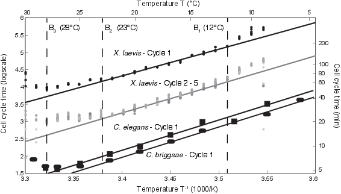
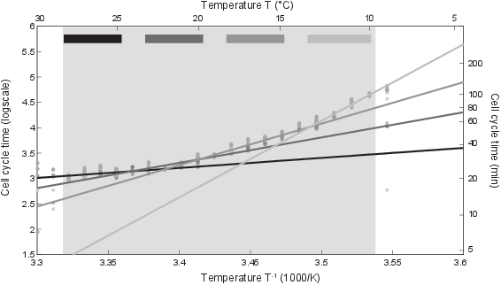
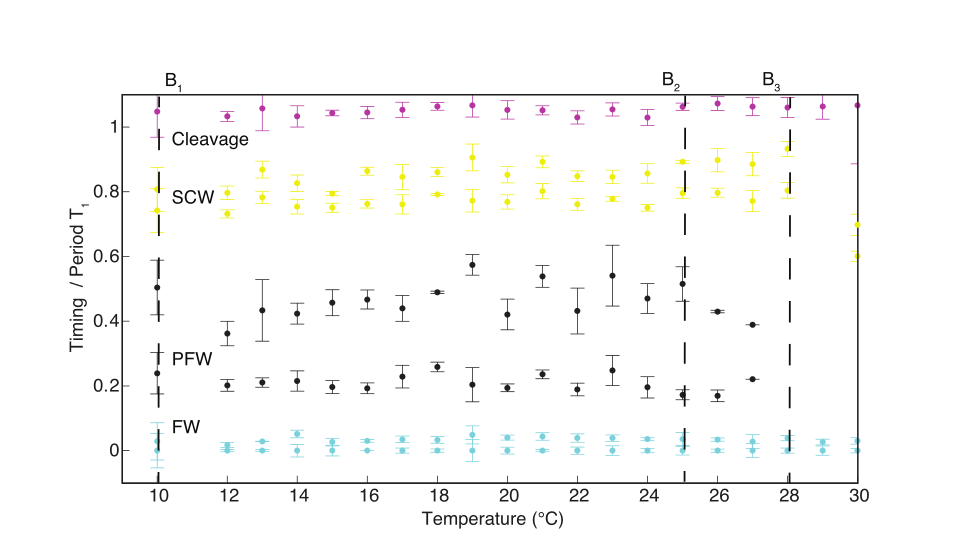
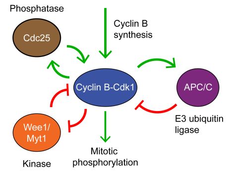
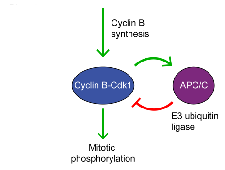

Conserved Scaling of the Cell Cycle with Temperature
Mostly failed attempts to measure CycB2
Conserved Scaling
Actually Not Arrhenius
Conserved Scaling
Robust Relative Timing
Cell Cycle Circuit
Cell Cycle Circuit
Simple Model for Scaling
\( \newcommand{\ddt}[0]{\frac{d}{dt}} \newcommand{\cyc}[0]{\text{CycB2}} \newcommand{\apc}[0]{\text{APC}} \newcommand{\k}[1]{k_\text{#1}} \) \begin{align} \ddt \cyc(t) &= \k{synth} - \k{deg}H_\alpha(\cyc(t - T_2))\apc(t) \\\\ \ddt \apc(t) &= \frac{\cyc(t - T_1)^n}{K + \cyc(t - T_1)^n} \end{align}Data
Bad blot

Bad blot

Bad blot

Not so bad blot

Attempt to repeat

Whoops

Whoops (more exposure)

Finally repeated correctly!

Loading Control

More Data


Whoops (again)

Bad blot

Bad blot

Bad blot

Future Directions
- Move to extract, where we know that we won't have to deal with inter-cell variation.
- Determine whether the CycB2-APC circuit is sufficient to reproduce temperature-dependence curve. If so, can modulating CycB2 synthesis account for conservation of scaling?
- Consider how the cell could modulate relative timing during the cell cycle.